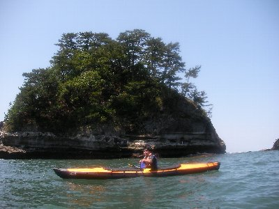
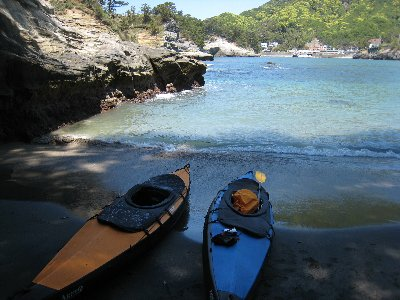
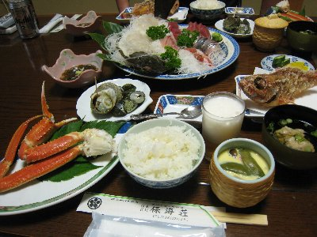
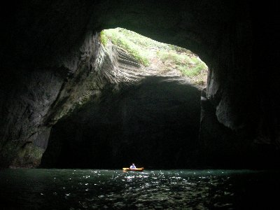
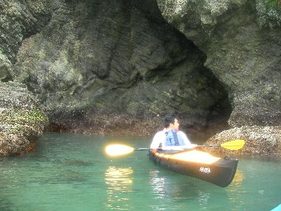

西伊豆カヤック | 2012年5月 |
|---|---|
5月のゴールデンウィークと言えば、春から夏に変わりつつある心地よい季節ですよね。そんななか、「海で洞窟めぐりした〜い！」という願いから、maruさんと一緒に一泊二日の西伊豆カヤックツアーをやりました。 車で堂ヶ島の南、仁科まで行きます。本日泊まる民宿に車を置かさせてもらい、早速カヤック組立。私とmaruさんの艇は組立式なので、組立・分解がちょっと面倒。でも、お陰で２艇とも車で運べちゃいます。今回も、軽自動車に2艇と大人二人。手軽に行けちゃうんです。 お昼前に仁科の湾（堂ヶ島側）を出発。目指すは天窓洞経由で南下して行けるとこまで。 天窓洞は、海側がポッカリ空いている洞窟で、中に入ると天井に穴があいていて、光が差し込んでくるところ。観光船がバンバン入るので、昼間は危なくて入りにくい。でも今日は観光船が高波のためお休みみたい。カヤックだとどうかな？行ってみよう！！ | |
 西伊豆堂ヶ島 |  maru艇 |
| 天気は上々♪ 海も西伊豆のコバルトブルー♪ で、湾から出ると、白波こそ立ってないが結構な波です。ちっちゃいカヤックは、大きく上下に揺れます。天窓洞の入り口も、波が当って飛沫が凄い！ これじゃ〜壁に叩きつけられちゃうかな。と、考えて本日の入洞は断念。 取りあえず南下してみるか。と南に舵を切るも、波が凄い。隣のmaruさんが波間に消えて見えなくなっちゃうくらいに波は高い。 せめて仁科の港まで行こうかと思ったのだが、小心者の二人は湾内を周遊することにして、この日はちょこっと乗っただけで終了。 | |
 べっしー艇 |  上陸して休憩 |
| で、本日は民宿泊まり。カヤックも駐車場に置いておけるし、ご飯は海鮮、お風呂は温泉。言うことなしですね。（maruさんは肉が食いたいと呻いておりましたが） 翌朝。観光船が動き出す前に天窓洞へ入りたいため、朝食前の6時に行ってみました。 天候は曇り、波は有るものの、昨日よりは良い感じなので、入ってみました。慎重に真ん中行けば壁にぶつかる事はなさそうです。 天窓洞は、見事に天井から光が差し込み良い感じなんですが、海は昨日より濁っていてグレー。これが、いつものコバルトブルー＋朝日が差し込む 状況なら最高でしょうね。 中は結構広くて、なるほど、観光船が入れる大きさです。入り口もいくつかあるみたいで、横穴が空いてます。 | |
|  夕食 |  天窓洞の中 |
| 取りあえずの天窓洞を堪能し、宿に戻って朝食。今後の予定を立てます。 今日は午後から崩れて雨予報。すでに曇り空でいつ降ってもおかしくない。風も若干ある。宿の人に聞いても、午後からヤバいとの情報。午前中のみの勝負だな。 どうせなら、ちょっと距離を乗りたい。波が有るため洞窟に入るってのは諦めよう。それなら、田子港もしくは浮島下あたりまで行って上陸し、バスで車を取り来よう。 そうと決まれば出発。宿に挨拶して車を置かさせてもらい（この辺が便利だよね）、駿河湾へ乗り出します。 今日は、観光船も出ているためコースも慎重に。波もそうだけど、南からの風が強く、南に向かおうとすると、なかなか前に進みません。北に向かうルートだから良いですけど。 中ノ島南側は、まさに荒れ狂う海って感じで、波間に隠れて見えない岩が、波飛沫を上げていました。コントロールも利きにくく、正直ちょっと怖い。しかし楽しい。いやっほーって感じでしょうか。 中ノ島をぐるりと廻り、象島に上陸。象島はちょうど干潮で、陸と繋がっている時間だったため人が沢山いました。 休憩をそこそこにして北上します。風は中ノ島が防いでくれるのか、一転して穏やかに。 海岸から見ると、洞窟っぽい所や、島と島の境界通路みたいな面白そうな場所があるんだけど、そんな場所には波がブチ当たり、白波が立ってます。近づけません。 浮島まで来たけど、まだ天気は持ちそう。気持ち体力ともに、まだ行けるので田子まで行ってみよう。 遠いと思っていた田子だけど以外に近く、ほどなくして到着。風に押されたかな。 田子の海岸？（漁港？）に上陸し、バスで車を拾いに行きました。 自分の艇では初めての海だったけど、楽しいね。また行きたい！ | |
 |  田子 |
| 写真：べっしー＆maru、コメント：べっしー | |